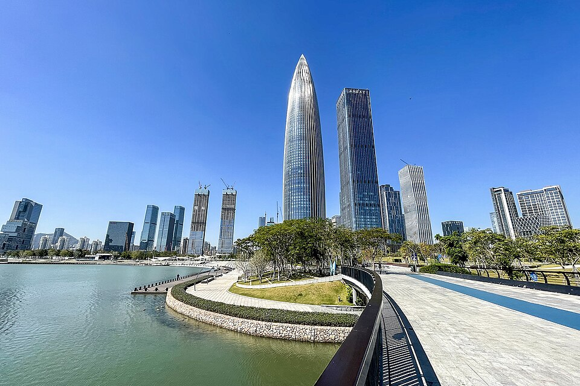
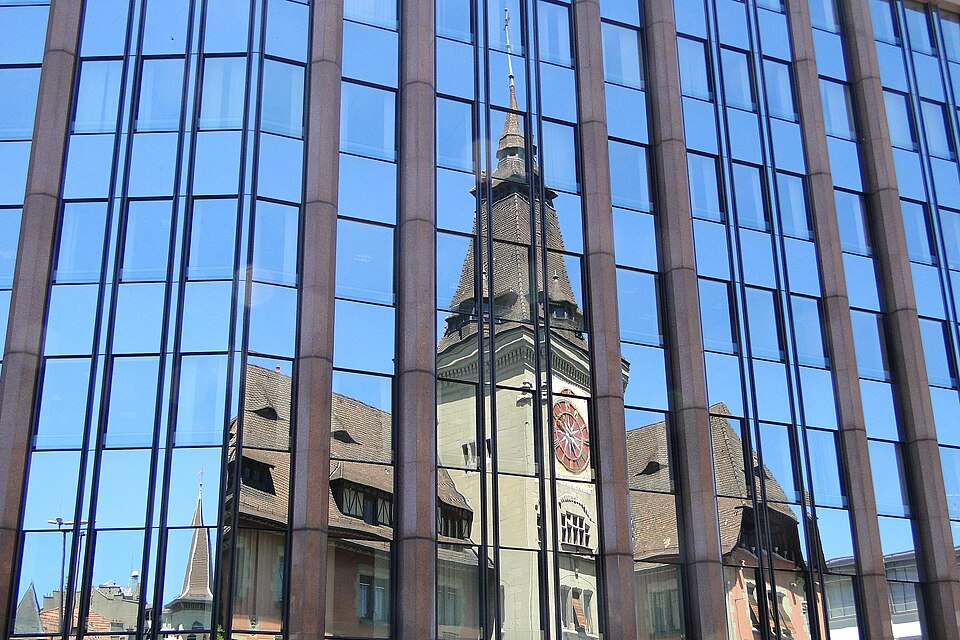

HR Director: Ning Li
I am HR Director at Deloitte China, leading HR Shared Services and AI-driven transformation. Across 25 years in consulting and in-house HR, I turn organisational problems into workable people systems.
- HR experience
- 25+ years
- Transformation work
- 40+ projects
- People served
- 20,000+

Career profile
My career spans consulting and in-house leadership. Starting at Mercer Switzerland in 2000, I went on to work across Huawei, Aon Hewitt, TCL Multimedia and Deloitte, building HR operating models, shared services and global workforce management.
At Deloitte Human Capital Advisory, I worked on more than 40 large-scale HR transformation engagements. Today, I lead a cross-functional team of around 60 people at Deloitte China, serving more than 20,000 employees and connecting data, systems and AI with real business operations.

Career phases
-
Consulting: redesigning organisations and processes
At Deloitte Human Capital Advisory, I worked on more than 40 large-scale HR transformation engagements, covering three-pillar models, shared services, systems and capability development.

-
Enterprise: owning service delivery
At TCL, I established an HR shared services centre from the ground up. At Deloitte China, I now lead a team of around 60 serving more than 20,000 employees.

-
AI transformation: connecting systems and work
I connect SAP SuccessFactors, Oracle HCM, low-code workflows and generative AI. More than 20 AI Agents have been deployed, and I received eRoad's Best Individual AI Innovation Award.
Earlier career
Shared services, consulting and international HR leadership shaped how I work today.
- TCL MultimediaHead of HR Shared Services / HR Transformation Lead · Jul 2015–Sep 20168,000+ employees
- Aon HewittConsulting Director · Mar 2011–Mar 201515+ clients
- Huawei TechnologiesHR Manager / Overseas HR Manager · Jul 2005–Aug 201010+ countries
- Mercer SwitzerlandAssistant · May 2000–Sep 200460 countries